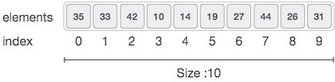

May31
Array is a container which can hold a fix number of items and these items should be of the same type. Most of the data structures make use of arrays to implement their algorithms. Following are the important terms to understand the concept of Array.
-
Element − Each item stored in an array is called an element.
-
Index − Each location of an element in an array has a numerical index, which is used to identify the element.
Array Representation
Arrays can be declared in various ways in different languages. For illustration, let's take C array declaration.

Arrays can be declared in various ways in different languages. For illustration, let's take C array declaration.
As per the above illustration, following are the important points to be considered.
-
Index starts with 0.
-
Array length is 10 which means it can store 10 elements.
-
Each element can be accessed via its index. For example, we can fetch an element at index 6 as 9.
Basic Operations
Following are the basic operations supported by an array.
-
Traverse − print all the array elements one by one.
-
Insertion − Adds an element at the given index.
-
Deletion − Deletes an element at the given index.
-
Search − Searches an element using the given index or by the value.
-
Update − Updates an element at the given index.
In C, when an array is initialized with size, then it assigns defaults values to its elements in following order.
| Data Type | Default Value |
|---|---|
| bool | false |
| char | 0 |
| int | 0 |
| float | 0.0 |
| double | 0.0f |
| void | |
| wchar_t | 0 |
Traverse Operation
This operation is to traverse through the elements of an array.
Example
Following program traverses and prints the elements of an array:
#include <stdio.h> main() { int LA[] = {1,3,5,7,8}; int item = 10, k = 3, n = 5; int i = 0, j = n; printf("The original array elements are :\n"); for(i = 0; i<n; i++) { printf("LA[%d] = %d \n", i, LA[i]); } }
When we compile and execute the above program, it produces the following result −
Output
The original array elements are : LA[0] = 1 LA[1] = 3 LA[2] = 5 LA[3] = 7 LA[4] = 8
Insertion Operation
Insert operation is to insert one or more data elements into an array. Based on the requirement, a new element can be added at the beginning, end, or any given index of array.
Here, we see a practical implementation of insertion operation, where we add data at the end of the array −
Example
Following is the implementation of the above algorithm −
#include <stdio.h> main() { int LA[] = {1,3,5,7,8}; int item = 10, k = 3, n = 5; int i = 0, j = n; printf("The original array elements are :\n"); for(i = 0; i<n; i++) { printf("LA[%d] = %d \n", i, LA[i]); } n = n + 1; while( j >= k) { LA[j+1] = LA[j]; j = j - 1; } LA[k] = item; printf("The array elements after insertion :\n"); for(i = 0; i<n; i++) { printf("LA[%d] = %d \n", i, LA[i]); } }
When we compile and execute the above program, it produces the following result −
Output
The original array elements are : LA[0] = 1 LA[1] = 3 LA[2] = 5 LA[3] = 7 LA[4] = 8 The array elements after insertion : LA[0] = 1 LA[1] = 3 LA[2] = 5 LA[3] = 10 LA[4] = 7 LA[5] = 8
Deletion Operation
Deletion refers to removing an existing element from the array and re-organizing all elements of an array.
Algorithm
Consider LA is a linear array with N elements and K is a positive integer such that K<=N. Following is the algorithm to delete an element available at the Kth position of LA.
1. Start 2. Set J = K 3. Repeat steps 4 and 5 while J < N 4. Set LA[J] = LA[J + 1] 5. Set J = J+1 6. Set N = N-1 7. Stop
Example
Following is the implementation of the above algorithm −
#include <stdio.h> void main() { int LA[] = {1,3,5,7,8}; int k = 3, n = 5; int i, j; printf("The original array elements are :\n"); for(i = 0; i<n; i++) { printf("LA[%d] = %d \n", i, LA[i]); } j = k; while( j < n) { LA[j-1] = LA[j]; j = j + 1; } n = n -1; printf("The array elements after deletion :\n"); for(i = 0; i<n; i++) { printf("LA[%d] = %d \n", i, LA[i]); } }
When we compile and execute the above program, it produces the following result −
Output
The original array elements are : LA[0] = 1 LA[1] = 3 LA[2] = 5 LA[3] = 7 LA[4] = 8 The array elements after deletion : LA[0] = 1 LA[1] = 3 LA[2] = 7 LA[3] = 8
Search Operation
You can perform a search for an array element based on its value or its index.
Algorithm
Consider LA is a linear array with N elements and K is a positive integer such that K<=N. Following is the algorithm to find an element with a value of ITEM using sequential search.
1. Start 2. Set J = 0 3. Repeat steps 4 and 5 while J < N 4. IF LA[J] is equal ITEM THEN GOTO STEP 6 5. Set J = J +1 6. PRINT J, ITEM 7. Stop
Example
Following is the implementation of the above algorithm −
#include <stdio.h> void main() { int LA[] = {1,3,5,7,8}; int item = 5, n = 5; int i = 0, j = 0; printf("The original array elements are :\n"); for(i = 0; i<n; i++) { printf("LA[%d] = %d \n", i, LA[i]); } while( j < n){ if( LA[j] == item ) { break; } j = j + 1; } printf("Found element %d at position %d\n", item, j+1); }
When we compile and execute the above program, it produces the following result −
Output
The original array elements are : LA[0] = 1 LA[1] = 3 LA[2] = 5 LA[3] = 7 LA[4] = 8 Found element 5 at position 3
Update Operation
Update operation refers to updating an existing element from the array at a given index.
Algorithm
Consider LA is a linear array with N elements and K is a positive integer such that K<=N. Following is the algorithm to update an element available at the Kth position of LA.
1. Start 2. Set LA[K-1] = ITEM 3. Stop
Example
Following is the implementation of the above algorithm −
#include <stdio.h> void main() { int LA[] = {1,3,5,7,8}; int k = 3, n = 5, item = 10; int i, j; printf("The original array elements are :\n"); for(i = 0; i<n; i++) { printf("LA[%d] = %d \n", i, LA[i]); } LA[k-1] = item; printf("The array elements after updation :\n"); for(i = 0; i<n; i++) { printf("LA[%d] = %d \n", i, LA[i]); } }
When we compile and execute the above program, it produces the following result −
Output
The original array elements are :
LA[0] = 1
LA[1] = 3
LA[2] = 5
LA[3] = 7
LA[4] = 8
The array elements after updation :
LA[0] = 1
LA[1] = 3
LA[2] = 10
LA[3] = 7
LA[4] = 8